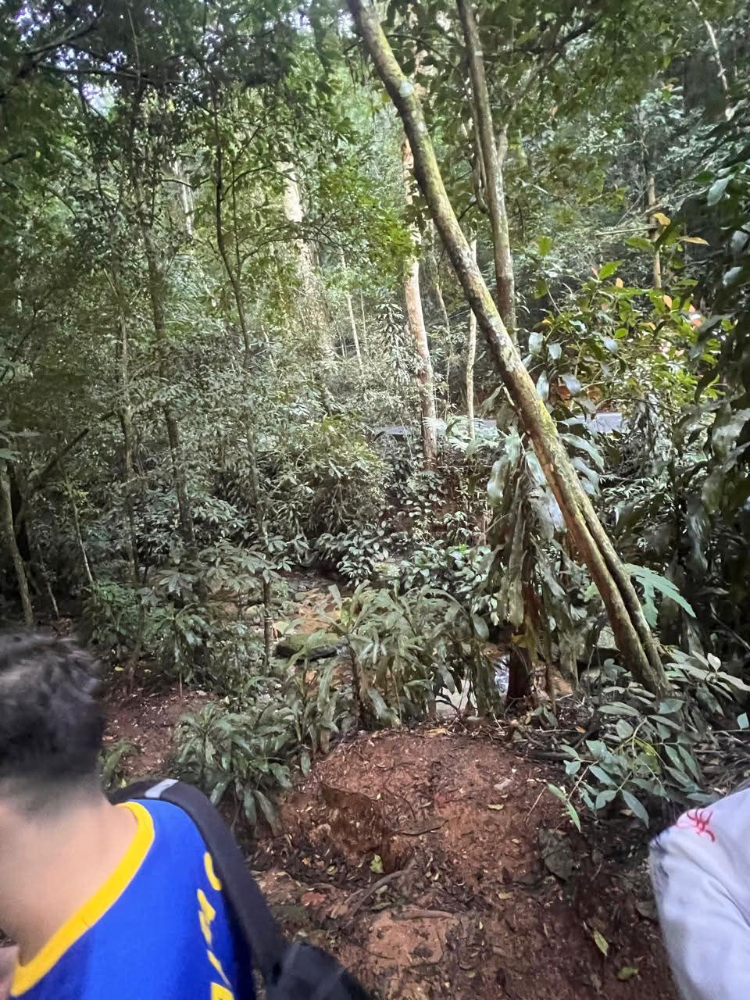
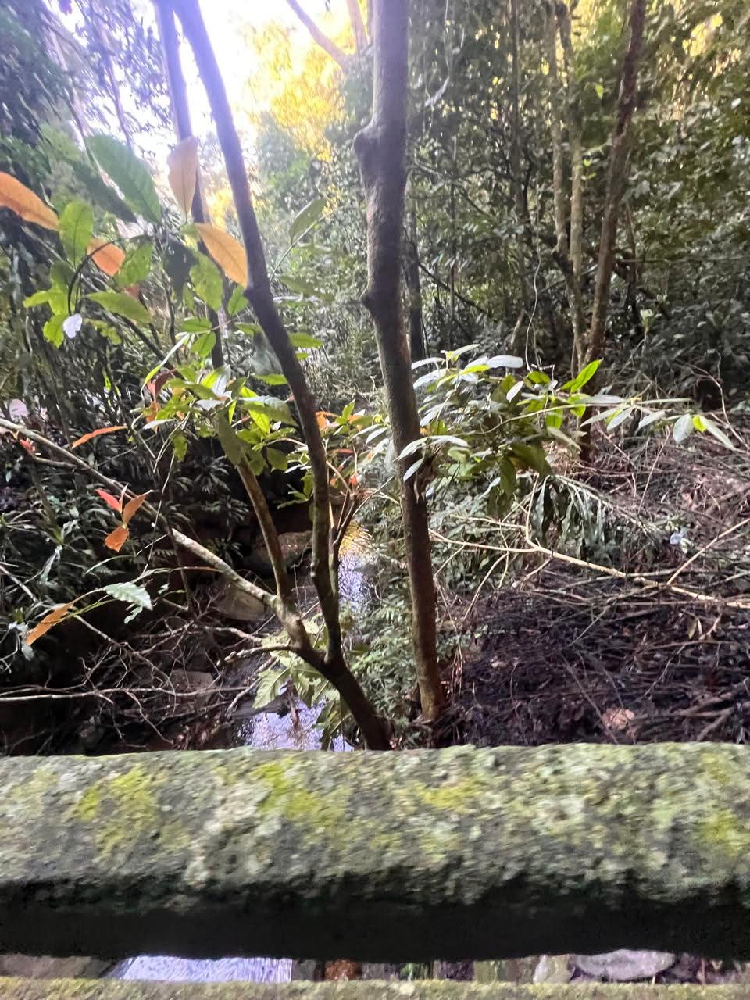
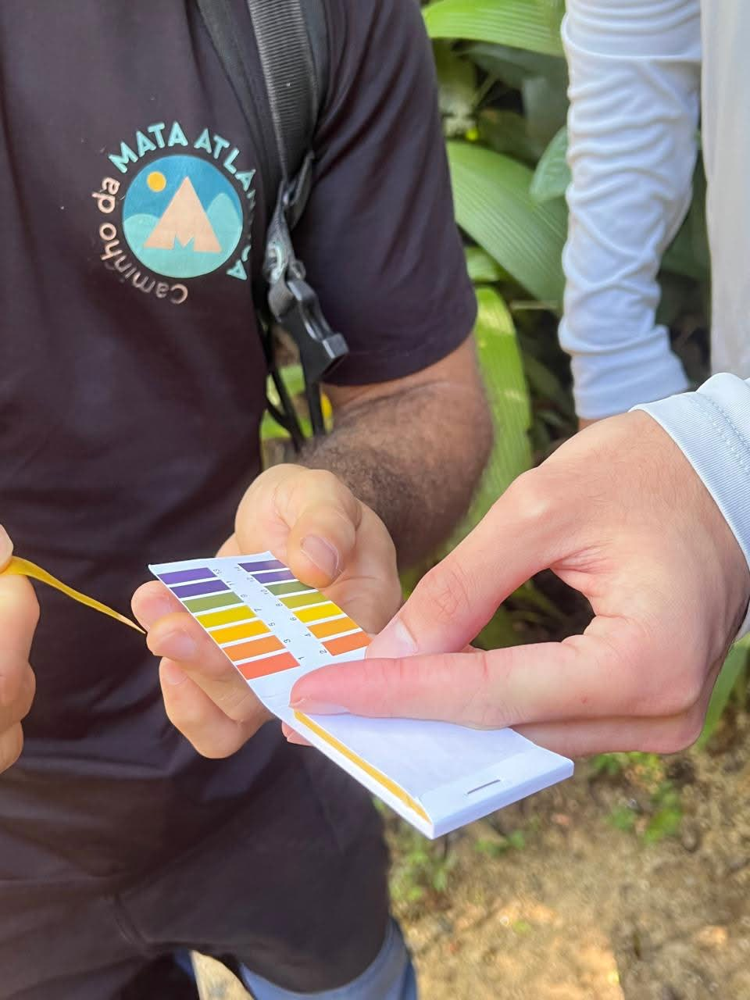
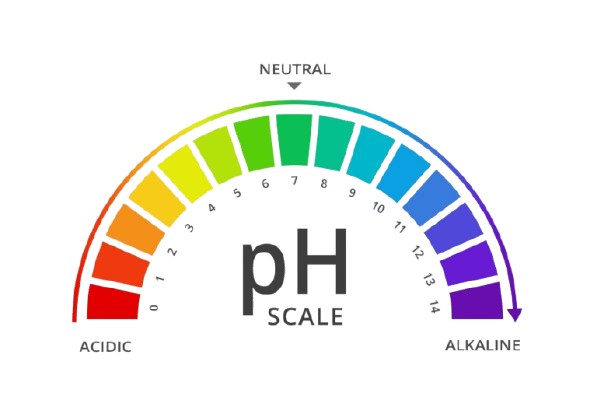
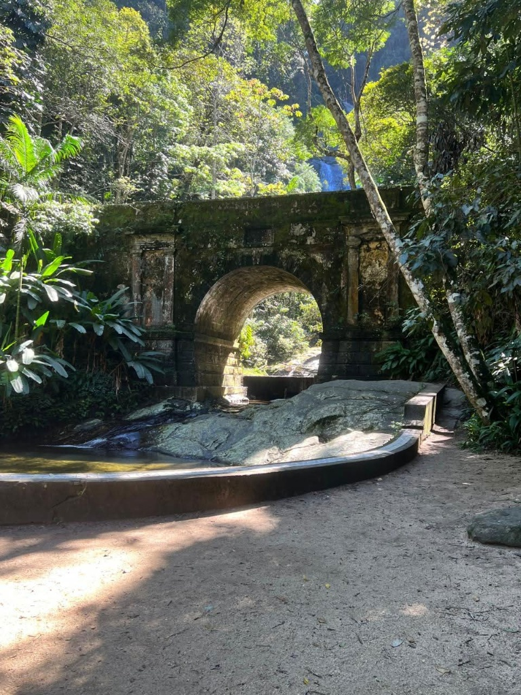
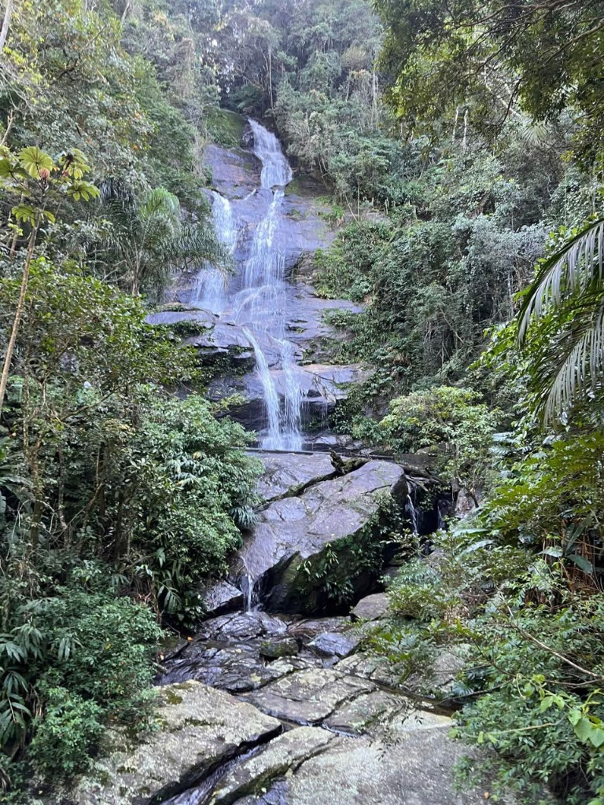

Realizamos a expedição no dia 17 de agosto. Fomos recebidos por um clima ameno, o que nos permitiu observar uma faceta do ecossistema e registrar os detalhes da Trilha do Estudante.


Durante nossa caminhada, paramos para realizar o teste prático de pH nas águas correntes da floresta. Usamos fitas indicadoras e confrontamos o resultado com a escala padrão de cores para avaliar a acidez e qualidade hídrica do ponto visitado naquele exato momento.


Antes de se tornar o exuberante parque que visitamos, o Maciço da Tijuca foi devastado por séculos de exploração de madeira, carvão e, principalmente, pelas grandes plantações de café que secaram as fontes de água do Rio de Janeiro.
O papel fundamental da mão de obra escravizada: O monumental trabalho de reflorestamento ordenado por Dom Pedro II e comandado pelo Major Manuel Archer a partir de 1861 não teria sido possível sem o suor e o trabalho braçal pesado de dezenas de escravizados e trabalhadores livres pobres. Foram eles que cavaram covas, plantaram centenas de milhares de mudas nativas e ergueram estruturas de pedra sob condições duríssimas, reerguendo do zero a floresta que hoje conhecemos.
Em nossa caminhada, identificamos marcas do uso público intenso, como erosão do solo e atalhos abertos fora do trajeto oficial.
O teste de pH que realizamos ilustra a importância de monitorar as nascentes locais contra o impacto e a alteração da qualidade hídrica.
A proximidade com a cidade gera pressões constantes, como o descarte de lixo nas imediações e a invasão de limites.
O risco de incêndios na estação seca exige brigadas de prevenção e aceiros constantes para proteger a fauna e flora.
A concorrência de plantas e animais exóticos introduzidos no passado ainda desafia o equilíbrio ecológico da Mata Atlântica.
Um dos pontos mais marcantes da nossa expedição une a engenharia histórica e a exuberância natural da floresta: a imponente Ponte dos Arcos e a queda d'água cristalina situada logo ao lado.


A relevância da construção: Estruturas como a Ponte dos Arcos refletem o esforço de urbanização e acesso planejado do século XIX dentro do parque. Construídas com blocos de rocha encaixados, essas obras facilitavam o escoamento e a travessia em meio a um relevo extremamente acidentado e cortado por cursos d'água. Ao lado da cachoeira, formam um cenário onde a intervenção humana histórica dialoga diretamente com a força da natureza regenerada.
Cuidar da Floresta da Tijuca hoje exige manter viva a memória de sua restauração, proteger o patrimônio histórico e adotar medidas práticas no cotidiano do parque.
Estabelecer um programa regular em parceria com escolas públicas e privadas onde turmas e visitantes realizem ações guiadas de recolhimento de pequenos resíduos plásticos e checagem simples de parâmetros hídricos (como o teste de pH que realizamos em campo), unindo educação ambiental direta, cidadania e conservação ativa dos recursos naturais.
Instalar placas informativas e bilíngues de baixo impacto visual ao longo da Trilha do Estudante e próximo a monumentos históricos, detalhando o esforço de recuperação da mata (inclusive o papel essencial da mão de obra escravizada), acompanhadas de cordas discretas e estacas ecológicas para conter a abertura de atalhos e mitigar a erosão do solo.
Criar uma diretriz específica de manutenção preventiva para marcos históricos de pedra — como a Ponte dos Arcos e pontilhões do parque —, unindo a limpeza cuidadosa de musgos destrutivos e a fiscalização do entorno das cachoeiras para evitar pichações, acúmulo de lixo nas margens e o pisoteio excessivo que danifica as encostas e as margens dos riachos.